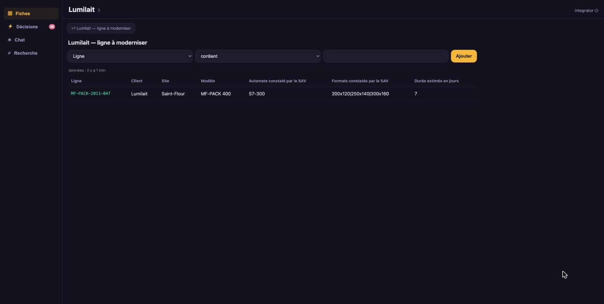
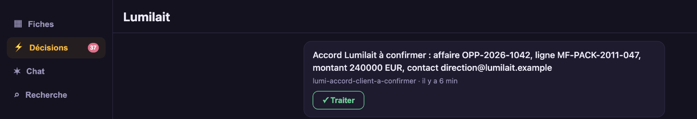
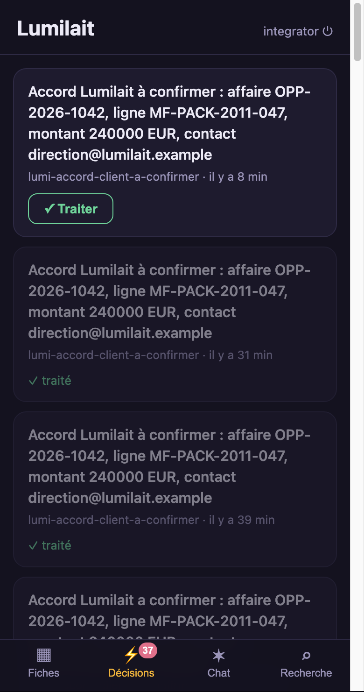
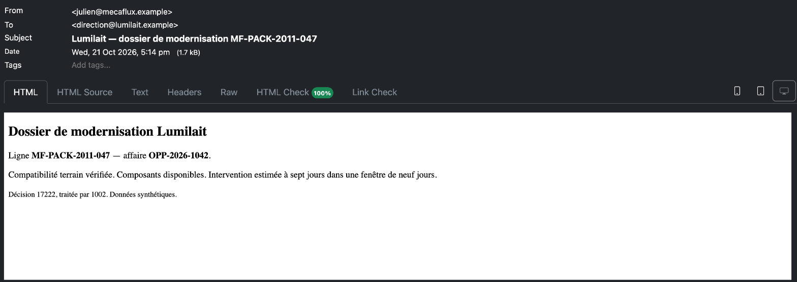

L'affaire avance pendant le dîner.
Cinq exports d'entreprise et un catalogue, quatre entités, trois vues, un Process. Le CRM passe l'affaire à confirmer ; la décision arrive dans la PWA, « Traiter » part en webhook et l'email client suit.
apiVersion: connectors.lumnik.io/v1kind: Connectormetadata: name: lumi-lumilait-erp-lines connector_type: csv-file scopes: [lumilait]spec: transport: kind: local path: /demo/lumilait/data/erp-lines.csv parser: has_header: true after_process: noneapiVersion: connectors.lumnik.io/v1kind: Connectormetadata: name: lumi-lumilait-sage-crm connector_type: csv-file scopes: [lumilait]spec: transport: kind: local path: /demo/lumilait/data/sage-crm-opportunities.csv parser: has_header: true after_process: noneapiVersion: connectors.lumnik.io/v1kind: Connectormetadata: name: lumi-lumilait-sav connector_type: csv-file scopes: [lumilait]spec: transport: kind: local path: /demo/lumilait/data/sav-modifications.csv parser: has_header: true after_process: noneapiVersion: connectors.lumnik.io/v1kind: Connectormetadata: name: lumi-lumilait-stock connector_type: csv-file scopes: [lumilait]spec: transport: kind: local path: /demo/lumilait/data/stock.csv parser: has_header: true after_process: noneapiVersion: connectors.lumnik.io/v1kind: Connectormetadata: name: lumi-lumilait-energy connector_type: csv-file scopes: [lumilait]spec: transport: kind: local path: /demo/lumilait/data/energy-readings.csv parser: has_header: true after_process: noneapiVersion: connectors.lumnik.io/v1kind: Connectormetadata: name: lumi-pool-categories connector_type: csv-file scopes: [lumilait]spec: transport: kind: local path: /demo/lumilait/data/m_product_category.csv parser: has_header: true after_process: noneapiVersion: connectors.lumnik.io/v1kind: Connectormetadata: name: lumi-pool-products connector_type: csv-file scopes: [lumilait]spec: transport: kind: local path: /demo/lumilait/data/m_product.csv parser: has_header: true after_process: none$ lm validate -f manifests/10-erp-lines.yaml
✓ 10-erp-lines.yaml — valid
$ lm apply -f manifests/10-erp-lines.yaml
{"name":"lumi-lumilait-erp-lines","connectorId":"62088abc-0d8d-49b2-99de-31f054a9b98e","endpointsApplied":1}
$ lm validate -f manifests/20-sage-crm.yaml
✓ 20-sage-crm.yaml — valid
$ lm apply -f manifests/20-sage-crm.yaml
{"name":"lumi-lumilait-sage-crm","connectorId":"e14b5fce-6a26-4a12-8e4a-ea3dc2713668","endpointsApplied":1}
$ lm validate -f manifests/30-sav-modifications.yaml
✓ 30-sav-modifications.yaml — valid
$ lm apply -f manifests/30-sav-modifications.yaml
{"name":"lumi-lumilait-sav","connectorId":"32e29be0-12f1-432b-9211-20fabbc25cac","endpointsApplied":1}
$ lm validate -f manifests/40-stock.yaml
✓ 40-stock.yaml — valid
$ lm apply -f manifests/40-stock.yaml
{"name":"lumi-lumilait-stock","connectorId":"ac865bc0-f1e9-4279-bcb6-9f9f50426681","endpointsApplied":1}
$ lm validate -f manifests/50-energy-readings.yaml
✓ 50-energy-readings.yaml — valid
$ lm apply -f manifests/50-energy-readings.yaml
{"name":"lumi-lumilait-energy","connectorId":"398436dd-19c5-4f7b-a621-a38e986fcf01","endpointsApplied":1}
$ lm validate -f manifests/52-pool-categories.yaml
✓ 52-pool-categories.yaml — valid
$ lm apply -f manifests/52-pool-categories.yaml
{"name":"lumi-pool-categories","connectorId":"25f928f4-9011-4aa1-890c-ac2351a635fe","endpointsApplied":1}
$ lm validate -f manifests/53-pool-products.yaml
✓ 53-pool-products.yaml — valid
$ lm apply -f manifests/53-pool-products.yaml
{"name":"lumi-pool-products","connectorId":"9d9749f0-836d-4c40-b5a3-d378805a7876","endpointsApplied":1}
$ lm connector run lumi-lumilait-erp-lines
run scheduled: d30f03eb-9589-4406-b5a3-888fa2e36a22
$ lm run get d30f03eb-9589-4406-b5a3-888fa2e36a22
ID CONNECTOR ENDPOINT STATUS IN OUT SKIPPED DEAD-LETTERS STARTED ENDED
d30f03eb lumi-lumilait-erp-lines default Completed 1 1 0 0 2026-10-21 17:06 2026-10-21 17:06
$ lm connector run lumi-lumilait-sage-crm
run scheduled: 86f4a286-ca6c-40ff-963c-9f09a93a489c
$ lm run get 86f4a286-ca6c-40ff-963c-9f09a93a489c
ID CONNECTOR ENDPOINT STATUS IN OUT SKIPPED DEAD-LETTERS STARTED ENDED
86f4a286 lumi-lumilait-sage-crm default Completed 1 1 0 0 2026-10-21 17:06 2026-10-21 17:06
$ lm connector run lumi-lumilait-sav
run scheduled: 697bac46-6897-409d-b7d4-59ab7e44d119
$ lm run get 697bac46-6897-409d-b7d4-59ab7e44d119
ID CONNECTOR ENDPOINT STATUS IN OUT SKIPPED DEAD-LETTERS STARTED ENDED
697bac46 lumi-lumilait-sav default Completed 1 1 0 0 2026-10-21 17:06 2026-10-21 17:06
$ lm connector run lumi-lumilait-stock
run scheduled: c668c35e-d4ac-4a8d-a8e7-3d79cadf6bf3
$ lm run get c668c35e-d4ac-4a8d-a8e7-3d79cadf6bf3
ID CONNECTOR ENDPOINT STATUS IN OUT SKIPPED DEAD-LETTERS STARTED ENDED
c668c35e lumi-lumilait-stock default Completed 4 4 0 0 2026-10-21 17:06 2026-10-21 17:06
$ lm connector run lumi-lumilait-energy
run scheduled: bc69556e-eaa5-4508-8594-f7aaced3e3dd
$ lm run get bc69556e-eaa5-4508-8594-f7aaced3e3dd
ID CONNECTOR ENDPOINT STATUS IN OUT SKIPPED DEAD-LETTERS STARTED ENDED
bc69556e lumi-lumilait-energy default Completed 3 3 0 0 2026-10-21 17:06 2026-10-21 17:06
$ lm connector run lumi-pool-categories
run scheduled: dcdcf8c6-07ea-424d-a562-ff36ca74921f
$ lm run get dcdcf8c6-07ea-424d-a562-ff36ca74921f
ID CONNECTOR ENDPOINT STATUS IN OUT SKIPPED DEAD-LETTERS STARTED ENDED
dcdcf8c6 lumi-pool-categories default Completed 63 63 0 0 2026-10-21 17:06 2026-10-21 17:06
$ lm connector run lumi-pool-products
run scheduled: 48fabdbe-81a4-4557-a4ec-62b05d4ab1a3
$ lm run get 48fabdbe-81a4-4557-a4ec-62b05d4ab1a3
ID CONNECTOR ENDPOINT STATUS IN OUT SKIPPED DEAD-LETTERS STARTED ENDED
48fabdbe lumi-pool-products default Completed 40233 40233 0 0 2026-10-21 17:06 2026-10-21 17:06- Lignes écrites
- lumi-lumilait-erp-lines 1 · lumi-lumilait-sage-crm 1 · lumi-lumilait-sav 1 · lumi-lumilait-stock 4 · lumi-lumilait-energy 3 · lumi-pool-categories 63 · lumi-pool-products 40233
preuves : replay.log, webhook-events.jsonl, mailpit-summary.json, sage-crm-state.json · transform v1
kind: Entityname: LumilaitLinedescription: "La ligne d'emballage Lumilait, rapprochée entre le dossier ERP et la vérité terrain du SAV."match: [line_id]scopes: [lumilait]columns: line_id: label: "Ligne" customer_code: label: "Code client" customer_name: label: "Client" site_name: label: "Site" model: label: "Modèle" original_controller: label: "Automate au dossier ERP" actual_controller: label: "Automate constaté par le SAV" formats_mm: label: "Formats au dossier ERP" actual_formats_mm: label: "Formats constatés par le SAV" intervention_days_estimate: label: "Durée estimée en jours"sources: - table: t_lumi_lumilait_erp_lines map: line_id: line_id customer_code: customer_code customer_name: customer_name site_name: site_name model: model original_controller: original_controller formats_mm: formats_mm - table: t_lumi_lumilait_sav map: line_id: line_id actual_controller: actual_controller actual_formats_mm: actual_formats_mm intervention_days_estimate: intervention_days_estimatekind: Entityname: LumilaitRetrofitPartdescription: "Une pièce nécessaire à la modernisation de la ligne d'emballage Lumilait."match: [part_no]scopes: [lumilait]columns: part_no: label: "Référence" description: "Référence unique de la pièce de modernisation." description: label: "Pièce" description: "Désignation lisible de la pièce." compatible_model: label: "Modèle compatible" description: "Modèle de ligne sur lequel la pièce peut être installée." example: "MF-PACK 400" qty_available: label: "Quantité disponible" description: "Nombre de pièces actuellement disponibles dans le stock." qty_required: label: "Quantité requise" description: "Nombre de pièces nécessaires pour ce retrofit." lead_time_days: label: "Délai en jours" description: "Délai d'approvisionnement annoncé en jours."sources: - table: t_lumi_lumilait_stock map: part_no: part_no description: description compatible_model: compatible_model qty_available: qty_available qty_required: qty_required lead_time_days: lead_time_dayskind: Entityname: PoolCategorydescription: "Une catégorie du catalogue de pièces détachées de piscine."match: [category_id]scopes: [lumilait]columns: category_id: label: "Identifiant catégorie" name: label: "Catégorie" description: label: "Description" active: label: "Actif"sources: - table: t_lumi_pool_categories map: m_product_category_id: category_id name: name description: description isactive: activekind: Entityname: PoolProductdescription: "Une pièce détachée de piscine, issue du catalogue ERP (données synthétiques)."match: [product_id]scopes: [lumilait]columns: product_id: label: "Identifiant produit" category_id: label: "Catégorie" reference: label: "Référence" description: label: "Description" active: label: "Actif"sources: - table: t_lumi_pool_products map: m_product_id: product_id m_product_category_id: category_id name: reference description: description isactive: active$ lm entity apply -f manifests/60-lumilait-line.yaml
Applied entity "LumilaitLine" → connector."v_lumilaitline"
$ lm entity apply -f manifests/61-lumilait-retrofit-part.yaml
Applied entity "LumilaitRetrofitPart" → connector."v_lumilaitretrofitpart"
$ lm entity apply -f manifests/62-pool-category.yaml
Applied entity "PoolCategory" → connector."v_poolcategory"
$ lm entity apply -f manifests/63-pool-product.yaml
Applied entity "PoolProduct" → connector."v_poolproduct"- LumilaitLine
- v_lumilaitline
- LumilaitRetrofitPart
- v_lumilaitretrofitpart
- PoolCategory
- v_poolcategory
- PoolProduct
- v_poolproduct
preuves : replay.log, webhook-events.jsonl, mailpit-summary.json, sage-crm-state.json · transform v1
apiVersion: apps.lumnik.io/v1kind: Viewmetadata: name: lumi-lumilait-linespec: scope: lumilait table: connector.v_lumilaitline title: "Lumilait — ligne à moderniser" columns: [line_id, customer_name, site_name, model, actual_controller, actual_formats_mm, intervention_days_estimate]apiVersion: apps.lumnik.io/v1kind: Viewmetadata: name: lumi-lumilait-stockspec: scope: lumilait table: connector.v_lumilaitretrofitpart title: "Lumilait — pièces du retrofit" columns: [part_no, description, qty_available, qty_required, lead_time_days]apiVersion: apps.lumnik.io/v1kind: Viewmetadata: name: lumi-pool-productsspec: scope: lumilait table: connector.v_poolproduct title: "Catalogue de pièces piscine" columns: [product_id, reference, description, category_id, active]$ lm view apply -f manifests/70-line-overview.yaml
applied: lumi-lumilait-line (scope lumilait)
$ lm view apply -f manifests/71-retrofit-stock.yaml
applied: lumi-lumilait-stock (scope lumilait)
$ lm view apply -f manifests/72-pool-products.yaml
applied: lumi-pool-products (scope lumilait)
$ lm view -f manifests/70-line-overview.yaml
Lumilait — ligne à moderniser
Ligne Client Site Modèle Automate constaté par le SAV Formats constatés par le SAV Durée estimée en jours
MF-PACK-2011-047 Lumilait Saint-Flour MF-PACK 400 S7-300 200x120|250x140|300x160 7
$ lm view -f manifests/71-retrofit-stock.yaml
Lumilait — pièces du retrofit
Référence Pièce Quantité disponible Quantité requise Délai en jours
DRV-V3-22KW Variateur VarioDrive V3 22 kW 4 3 1
HMI-12-FOOD IHM inox alimentaire 12 pouces 1 1 5
IO-MF400 Module entrees sorties retrofit MF400 3 2 4
KIT-S7-1500-MF400 Kit automate S7-1500 pour MF-PACK 400 2 1 2- lumi-lumilait-line
- lumilait
- lumi-lumilait-stock
- lumilait
- lumi-pool-products
- lumilait
preuves : replay.log, webhook-events.jsonl, mailpit-summary.json, sage-crm-state.json · transform v1

apiVersion: search.lumnik.io/v1kind: SearchIndexmetadata: name: pool-productsspec: entity: PoolProduct language: french fields: - name: reference match: prefix - name: description match: text - name: category_id facet: true - name: active facet: trueapiVersion: search.lumnik.io/v1kind: SearchIndexmetadata: name: pool-categoriesspec: entity: PoolCategory language: french fields: - name: name match: text - name: description match: text - name: category_id facet: true - name: active facet: trueapiVersion: apps.lumnik.io/v1kind: Appmetadata: name: lumilaitspec: title: Lumilait scope: lumilait icon: generic theme: accentColor: "#4fd1a5" backgroundColor: "#f4f1ea" default: falseapiVersion: apps.lumnik.io/v1kind: Processmetadata: name: lumi-accord-client-a-confirmerspec: scope: lumilait on: event: data.row.changed table: connector.t_lumi_lumilait_sage_crm when: - status=PRET_CONFIRMATION_CLIENT emit: type: decision.accord-client-a-confirmer message: "Accord Lumilait à confirmer : affaire {opportunity_id}, ligne {line_id}, montant {amount_eur} EUR, contact {contact_email}"$ lm search apply -f manifests/74-pool-product-search.yaml
Applied search index "pool-products" → entity PoolProduct (valid)
$ lm search apply -f manifests/75-pool-category-search.yaml
Applied search index "pool-categories" → entity PoolCategory (valid)
$ lm search rebuild pool-products --wait --timeout 10m
Name pool-products
Status ready
Live generation 78
Documents 40233
Lag 0s
Last rebuild 4f9811f2-5cbb-4f31-9574-9099afd623df (ready)
$ lm search rebuild pool-categories --wait --timeout 10m
Name pool-categories
Status ready
Live generation 79
Documents 63
Lag 1s
Last rebuild cb6f9d19-39c8-4ff8-892d-54864db7e349 (ready)
$ lm app apply -f manifests/73-lumilait-app.yaml
Applied app "lumilait" → scope lumilait
$ lm process apply -f manifests/80-agreement-process.yaml
{"name":"lumi-accord-client-a-confirmer","table":"connector.t_lumi_lumilait_sage_crm","emit":"decision.accord-client-a-confirmer"}- App
- lumilait
- Documents indexés
- pool-products 40233 · pool-categories 63
preuves : replay.log, webhook-events.jsonl, mailpit-summary.json, sage-crm-state.json · transform v1
$ lm connector run lumi-lumilait-sage-crm
run scheduled: a67b1877-eb18-4424-a1bc-380b2c894428
$ lm run get a67b1877-eb18-4424-a1bc-380b2c894428
ID CONNECTOR ENDPOINT STATUS IN OUT SKIPPED DEAD-LETTERS STARTED ENDED
a67b1877 lumi-lumilait-sage-crm default Completed 1 1 0 0 2026-10-21 17:06 2026-10-21 17:06
• 1 row(s) removed — the source no longer holds them
$ lm inbox
ID WHEN PROCESS MESSAGE ENTITY_KEY
17222 just now lumi-accord-client-a-confirmer Accord Lumilait à confirmer : affaire OPP-2026-1042, ligne MF-PACK-2011-047, montant 240000 EUR, contact direction@lumilait.example 27a5d3d39be65de21a371be7ff2c689530f451d859a264ad28142209868db414- Décision
- 17222
- Process
- lumi-accord-client-a-confirmer
preuves : replay.log, webhook-events.jsonl, mailpit-summary.json, sage-crm-state.json · transform v1


- Traitée par l'utilisateur
- 1002
- CRM simulé
- OPP-2026-1042 → ACCORD_DE_PRINCIPE · 17222
- Email client
- direction@lumilait.example — Lumilait — dossier de modernisation MF-PACK-2011-047
preuves : replay.log, webhook-events.jsonl, mailpit-summary.json, sage-crm-state.json · transform v1


Limites
- Le CRM, l'automate et la boîte mail sont simulés.
- lumnik lit les exports ; il n'écrit pas dans le CRM, l'automate le fait.
- Personnes, sociétés, montants et catalogue sont fictifs.